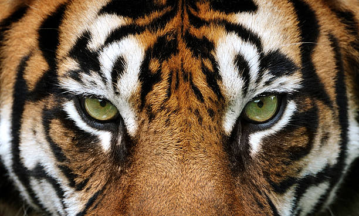
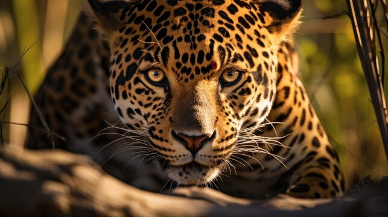
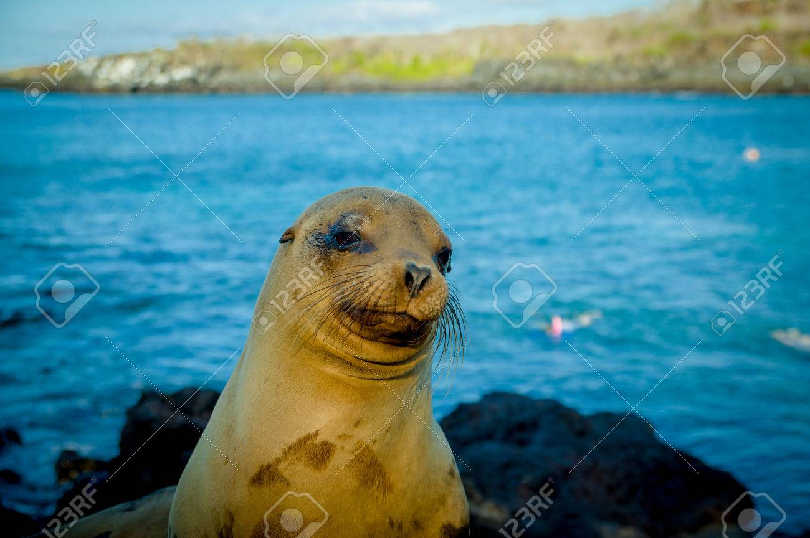
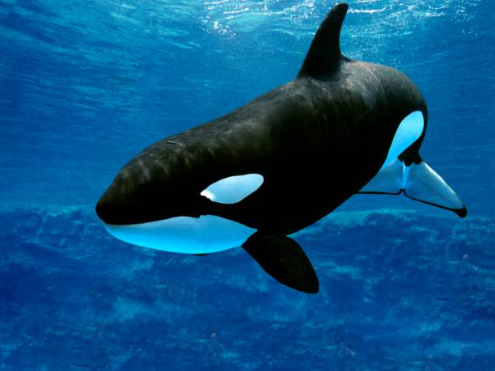
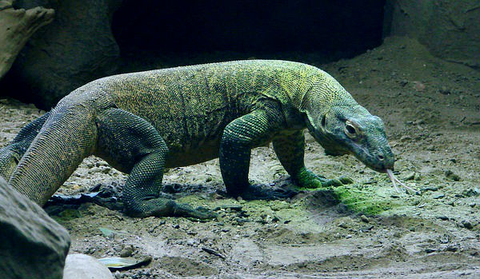
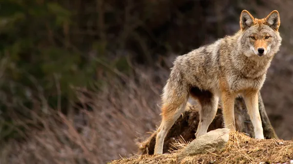
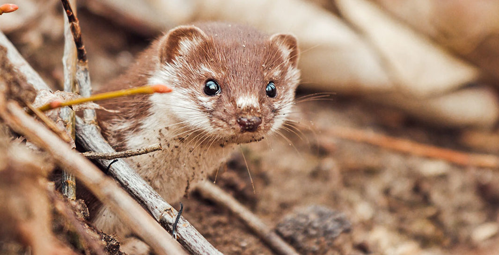
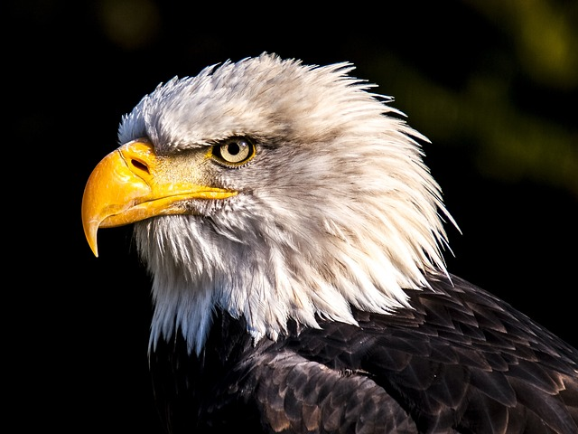
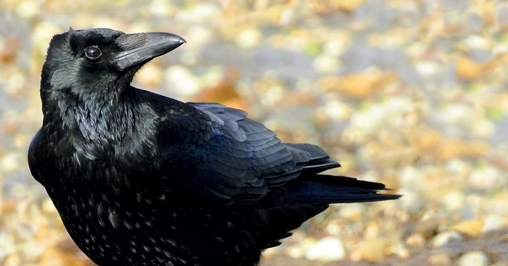
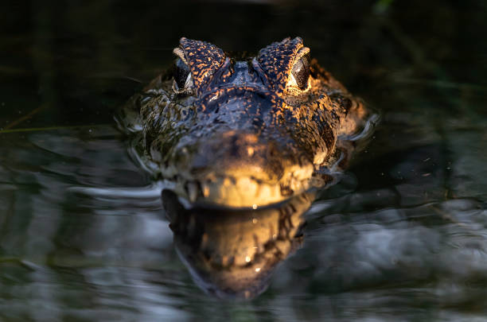

Tigre
El tigre conocido cientificamente como Panthera Tigris, es el felino más grande del mundo y se encuentra clasificado en peligro de extinción. Los tigres son conocidos por su pelaje anaranjado y sus rayas negras, cada individuo tiene un patron unico de rayas, similar a las huellas dactilares en los humanos. El peso de los machos varia entre 50 y 260kg, mientras que las hembras pueden pesar entre 25 y 170kg. La longitud de estos animales puede alcanzar una longitud entre 190 y 330 cm, incluyendo la cola.
Leopardo
Los leopardos tienen una silueta maciza, con cabeza redonda, cola larga y fina. Su pelage generalmente es suave y grueso, miden entre 91cm y 1.91cm de longitud, más una cola de 58 a 110cm de largo. Los leopardos son los féldos más adactales, hábitando todo tipo de terreno siempre y cuando tengan donde esconderse y suficientes presas.
Leon Marino
Los leones marinos son pinnipedos, un grupo de mamiferos acuaticos, que incluyen focas y morsas, se distinguen por tener aletas en forma de patas. Tienen una capa de grasa debajo de la piel que les permite regular la temperatura corporal y les da forma hidrodinámica para nadar y su pelaje es marrón oscuro, se diferencian de las focas por que tienen orejas externas pequeñas y puntiagudas, y pueden caminar apoyandose en sus aletas.
Orca
Las Orcas tambien conocidas como ballenas asesinas, son los mayores miembros de los delfinidos, tienen un cuerpo hidrodinámico de color negro en el dorso y en el vientre de color blanco con una caracteristica mancha blanca detrás de cada ojo. Los machos pueden alcanzas una longitud de 9.8 m de longitud y pesar hasta 10.000 kg, mientras que las hembras son más pequeñas, llegando a los 8 m y 5,500 kg.
Dragon de comodo
Son los lagartos más grandes del mundo y a pesar de su nombre, no escupen fuego ni vuelas, son reptiles escamosos que habitan el las islas de Indonesia. Pueden llegaar a medir hasta tres metros de largo y a pesar más de 90kg, su cuerpo es robusto, con una cola larga y poderosa. Tienen una lengua bifida que utilizan para oler y localizar a sus presas, son excelentes nadadores, escaladores y corredores.
Coyote
El coyote es un cánino, pariente cercano del lobo y del perro dómestico, tiene un curpo delgado y ágil, con patas largas y cola tupida, su pelaje varia en color desde gris hasta rojiso y suele tener marcas blancas en cara y en la punta de la cola. Son animales sociales y pueden vivir en grupos, son principalmente nocturnos pero pueden ser activos durante el dia, son conocidos por su inteligencia y su capacidad de adaptarse a diferentes situaciones.
Comadreja
La comadreja es un animal mamifero, perteneciente a la familia de los mustelinos, al igual que las nutrias y los tejones, es conocido por ser uno de los carnivoros más pequeños del mundo. Son animales alargados y esbeltos, con un cuerpo cubierto de pelaje denso que puede variar el color, según la estación y la región.
Aguila
Es un ave rapaz de gran tamaño, perteneciente a la familia de los Accipitridos, se caracteriza por tener una gran envergadura, su pico curvado y garras afiladas.
Cuervo
El cuervo es un ave perteneciente a la familia de los córvidos, al igual que las urracas y las grangillas, son aves de tamaño mediano a grande, con un plumaje generalmente negro brillante y un picofuerte y curvado.
Caiman
Los caimanes son reptiles semiacuáticos pertenecientes a la familia Alligatoridae. Son parientes cercanos de los cocodrilos, pero se diferencian de ellos en algunas características físicas y de comportamiento.